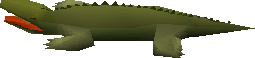

")
Postbag 22
The next time the R.P.D.T. sends me to deliver a letter to Grimgnash, they had better be paying me double! Or paying me at all, come to think of it... Still, the heartwarming tail of a cat in love makes it all worth while. I just hope Neite doesn't read this!
Dear Murphy,
Hi, pal! Remember me? The land lover you take out to dive off Rimmington sometimes? After our most recent excursion, I had a thought. This device you have invented, allowing people to breath underwater, have you considered using it for some kind of monetary gain? I mean, you could run underwater holidays. You could sell it to the military (you never know when an attack from below could be useful). You could race seahorses (falls hurt less underwater). If you use my ideas, is there any chance of a finder's fee?
~ Scubalooney ~
~ Why don't catfish purr? ~
P.S. How do you get your boat back after it sinks? (As it does so often.)
Ah, it be my lily-livered Scubalooney! I thought I could smell you on the sea breeze. In a good way, a'course, not in a festerin' fish-pile kinda manner.
I gotta bless yer bones fer some mighty winnin' ideas there, though I'd set a course aside of any seahorses. Don't ask me why, m'lad, they just gimme the shivers; mayhap it be the glazed look they have, mayhap the way they look like nothin' else. An' if they be seahorses, what be a horse?
Seems I've gone sideways from me point.
Ah, yep - 'ventures'. I 'ad been a-lookin' to spread my sails last week when an idea burst in on me. 'Cap'n Murphy's Salvage, Shoe Shop an' Pearl Necklace Store'. Got a harmonious ring to it, ain't it? If yer been big net fishin' you'd know that the bottom of the squallin' seas be a-strewn wit pearls and boots. So, ol' Murphy would go down wit' a sack and a shoerack, then come atop and sell the boots and pearls for knockdown prices. They would sell like hot sharks.
Keep sailin'
Cap'n Murphy
P.S. - Salvage, m'lad, salvage. Plus me boys 'ave a mighty Construction and Woodcutting level. I'm proud o' my boys.
Dear TzHaar-Mej-Jal,
Not often do I go by your caves without shuddering with fear at the horrors you keep within it and more recently I realised that I, along with most other players, don't know a whole lot about your folk's "rite of passage".
How did you tame all those beasts in there? I mean the Ket-Zek & TzTok-Jad don't exactly seem the sorts to comply with orders.
Where do all of these creatures come from? With the thousands being slain each day, surely the populations of Tz-Kih have been seriously diminished by now.
TzTok-Jad - well, where do I begin? Such an amazing creature and so powerful it surprises me that anyone could tame that beast. Was it a pet that got horribly out of control? Perhaps created from the very pits of the volcano itself and healed by the Yt-HurKot time and time again after its defeat?
Do you sometimes consider this a zoo with all those fascinating beasties that hide inside the walls of volcanic structure that you call home?
And lastly, where and how do you make those lovely fire capes? It's almost like a stream of lava flowing down your back constantly.
Your Humaniod Cave Chicken, Sxcibeast1
Mighty greetings JalYt-Ket-Sxcibeast1,
TzHaar-Mej-Jal is sorry to hear my fight cave makes you fearful. Fight cave is to honour the strong and the bold, perhaps you should return when you can face these fears.
TzHaar-Mej-Jal said nothing about taming these creatures. They are creatures born of the volcano, like birds of your world above. We make fight cave, and they willingly enter it to find what challenge JalYt offer. They are vessels of flame and ash; within them burns life of the volcano. They are as eternal as our mountain!
They were born on the day volcano shook foundation of earth. Creating something unique. TzTok-Jad came forth from the deepest, darkest parts of long forgotten earth, and the raging fires of TzHaar gave new life. TzHaar-Mej-Jal thinks you should not see TzTok-Jad as pet - it is mighty essence of our home! To defeat TzTok-Jad is to humble us. With great beasts like TzTok-Jad, you foolish to think my domain as a zoo. A zoo is a place of joy. Fight cave is a place of honour.
As long as the magma continue to bubble, the creatures of the fight cave continue to exist. The hardened rock and the blazing fires of TzHaar are perfect environment to birth new life, and to sustain the living. You not realise, JalYt-Ket-Sxcibeast1, that the creatures down here do not know death. Death only come to creatures of flesh and blood, but the creatures in fight cave, once destroyed, are called back into the fires of the mountain, becoming part of it once more. This cycle will always continue until the sundering of prophecy, when the flames of TzHaar are forever extinguished by the cold seas.
The fire cape not a simple piece of armour as you may believe, JalYt-Ket. It is a living cape imbued with the power of the volcanic flame, which continues to flow throughout it.
Enter into my domain soon, and if you succeed, your name will be known in all of TzHaar!
Honour strength!
TzHaar-Mej-Jal
Dear Cyrisus,
I have heard from the Oneiromancer that you are putting your new found courage to good use. Congratulations! I'm so glad I could help you overcome this little obstacle of yours. Those fights in the Dreamworld were really quite something.
As it happens, that battle is the reason I am writing to you. For one so afraid of combat, you seem very experienced. I first noticed this when collecting items from your bank, with which to equip you. The Ahrim's you were wearing requires a level 70 Defence to wear, and the abyssal whip, similarly, requires level 70 Attack. Furthermore, upon entering combat, I saw that your combat level was 126, which implies to me that most of your combat levels are are around 99. Now, prayer and magic are fairly easy to level up without entering combat, but what about the rest of your stats?
Either you're very friendly with a certain lamp-maker, or there's something you're not telling me...
With best wishs from your friend,
Kailiebe
Dear Kailiebe,
Firstly, thank you for the unwavering support! I too enjoyed roughing-up those pesky monsters in the Dreamworld! Perhaps in future we shall once again draw swords (or longbows, or staves) together, and wave them provocatively in the faces of our mutual enemy!
As for my modest combat levels, I must confess, they do not necessarily reflect my ability or experience in the truest of lights...
If truth be told (and it should be, always), I have spent most of my sheltered life in and around a lonely Lumbridge, where I passed many a day, month and year slaying small spiders, rats and chickens. Do you have any idea how many chickens had to fall at the hands of my (now blunt) bronze sword for me to reach this combat level? Well, I think I lost count during the second year, but my incredibly inept calculations estimate the number to be something around the 3,258,608 mark...
Do I feel good about slaughtering enough chickens to feed the whole of Asgarnia for a millennia? Well, yes, because now I have an awesome combat level.
Do I advise you train the way I did? Oh no, definitely not. Killing in excess of 300 chickens a day for over 30 years is NOT a noble way to gain experience. Think of the chickens...seriously. I think they have feelings, too... I think.
Best wishes to you also, needlessly inquisitive adventurer.
Cyrisus.
P.S. I don't trust genies – they smell of bronze.
Dear Morten Holdstrom,
I have been wandering about your island very much as of late, and I love the feeling of serenity you have. It's really a beautiful island, you know. You should be proud! You seem to have kept it peaceful, but has that always been the case? As I wander out of your protected town, I see that trolls are gathering across the bridges. I, certainly, was shocked to see so many powerful trolls gathering. So, my question to you is how do you deal with these trolls effectively? From other trolls I have seen, they come across as rather dense in the head, but these ones, they look very smart. I wonder how you keep them away so well, as your wooden wall seems to be untouched!
Yours intriguingly,
Cup Cake 04
Good day to you, Cup Cake 04,
I am glad to hear that you have been enjoying our island and the crisp winds the sea brings from the west, although I would insist you try some surströmming next time you visit.
Untouched, you say? Alas, no. As I bury my latest catch of herring, I can recall the battered splinters of those very fortifications. To this day you can still see the homes, to the west of the town, not yet rebuilt from the assault on the village. The wooden walls have stood proud and unbroached since then, stronger than before and unmarked by stone or club. Those trolls are indeed more intelligent than you would expect, but they are still struck with fear by a Fremennik army. As long as there are men and women to defend the town, the trolls will dare not approach. It was only in the time of the last Burgher that the Fremennik of Neitiznot left their village to seize Jatizso and the trolls dared attack.
Times are more peaceful now, enabling one to savour the delights of fermented herring, even if King Gjuki Sorvott IV pushes at the truce between Jatizso and Neitiznot through paranoia. It is not unusual for groups of men and women to hone their skills on these trolls, as honorary guards of our beautiful island. A Fremennik should never be unprepared to prove his strength and those ice trolls stand no chance against a sturdily built fremennik shield and the blood of our ancestors boiling under our skin!
Morten Holdstrom
Dear Gnome Bankers,
I am writing this letter to both complain and to praise you.
I've been working on my woodcutting level for quite a long time, so I'm around the Gnome Stronghold enough to get to know you guys. You guys are the best: always helpful, well mannered and ready the serve even the rudest customers.
You're always there, standing on your feet all day and night. Do you guys ever change shifts? Aren't you tired? It doesn't look to me like you can even reach your booth windows. Someone has to stand up for you, so I'm asking Jagex to give you chairs with high legs. Then you can see who you're dealing with and relax those tired little legs of yours. I hope this won't get you in trouble because I mean well.
Thank you so much.
Your biggest fan,
Scheeteke
Dear Valued Customer,
We are delighted to hear that you have been satisfied with the service provided here at the Stronghold branch of the Bank of RuneScape. Each of us prides ourselves on the gold stars we can earn on our name badges for outstanding feats in Customer Service. I myself have got the five gold stars and been clerk of the month twice, meaning I can get my picture up on the wall to inspire all my fellow employees.
We do operate on a shift basis, but you'll find that our company uniform and general positioning below the height of the counter mask our rotations so that the customer doesn't notice. Indeed, it is imperative that our Customer Service is not adversely affected by mere things like breaks and life outside of work.
Fear not, we have no need of high chairs; we are extremely happy with our system of periscopes, extendible mechanical grabbers - as tested in the Keldagrim branch - and personal catapults we use to ensure we can reach everything around the office.
Well, I must get back to my customers before anyone notices my absence, I believe Claudio is filling in for me at the moment.
Please remember that that the Bank of RuneScape will always be here to cope with your hoarding desires, provided they do not exceed 400 different types of item of course, that would be sheer folly.
Warm regards,
Giuseppe Francesco Giovanni Vieceli,
5 Star Clerk, Clerk of the Month,
Bank of RuneScape
Dear Thurgo,
Since you are a Master Smith, and one of the last remaining Imcando dwarves, I was wondering if you could answer a question for me about a peculiar ore I found in the Sanguinesti Region. It's blue-green and is known among the vampyres and those living in the ghetto (the vampyres are forcing the humans to pay blood tithes and to mine this) as 'daeyalt ore'. Do you recall anything pertaining to this ore? Does your ancestor's lore mention it? What could the vampyres be making with it? Weapons with power beyond our wildest dreams? Should we run and scream like the barbarians? What about Redberry Pie? WHAT WILL HAPPEN TO THE PIE? Thanks in advance for your response.
-Peanutbirdie
RuneScape's Beer Baron
Beer Baron,
Don't worry about the pie, mate. Post it to me; I'll keep it safe and sound. I've attached a self-addressed pie dish.
As for these blue-green rocks, mate - well, I haven't heard nowt about them, and we Imcando keep pretty meticulous records of every rock in RuneScape. This rock you got ain't natural. It'll have some magical hoobery-joobery on it, and I'm guessing those vampire types are after the hoobery-joobery. Don't take it from me, course. There's tall'uns with heads in books who'll give you an idea less raw than old Thurgo. I'm just giving you my two gold pieces' worth.
Well, I'll have to keep an eye out for this unnatural rock. The true test of a rock is in its taste, 'Birdie. The miner's mouth ain't let me down yet.
Thurgo
Dear Grimgnash,
Recently, I told you a simple bedtime story. For the most part, it was belligerent and violent; just the way you like it. Well, I slipped up a couple times, and you bit me.
After I told you my story, I contacted my injury lawyer. He claims I have legal rights. I'd hate to take some one of your stature to court, so here's the deal: you tell me a story, and we drop the charges. I think that's a fair deal, right?
Your's grimly,
R. Chipmunk
Grarghk!
Grimgnash not care for little meatless skull. You human send Grimgnash meat next time. Skull not good eating. Skull taste bad.
Human want story? Grimgnash's mother-griff tell Grimgnash many stories, but they too fun for human. Human feel ill if Grimgnash tell Grimgnash's mother-griff stories. Grimgnash know other stories, told to Grimgnash by strange woman with paint on white face. She live on other mountain and have no meat.
She tell me many stories, all too short:
In the desert the scarab waits.
The Institute reports a random fluctuation in rates of production.
The Strong will help the Weak.
My two-er just beat a three-er!
Ogre men aren't very clean.
Look beneath the Plain of Mud.
The threat from the north shall be of Mahjarrat made.
Grimgnash find and eat you later.
Grimgnash
*puts on catspeak amulet*
Dear Shasta,
I would first like to say that I am sorry. I somehow shooed you away without knowing and you were gone forever. I want to know if you are ok. Have you found a new owner? Are you somewhere in the Wilderness? What have you seen in these four months we have been apart? I miss you very much Shasta. I have sent this letter three months in a row and it has not gotten into the letters so my letters must be getting lost. I'm sorry I haven't talked to you in so long.
Your Loving owner,
Maha Nadihan
Maha Nadihan!
It has been a while since you rubbed my belly; I hope you are keeping well. I accompanied you on many quests, and we had some wonderful times together, but I'm afraid I have begun a quest of my very own.
You see, I have fallen in love! As we wandered I spied the most beautiful black cat I have ever seen. He had deep green eyes set into his perfect face, and a scarlet collar around his neck. Alas, when I looked back – he was gone! I have glimpsed him a number of times again, from afar, but I have never caught up to him. I won't give up on my emerald-eyed love.
Thank you for all the fish, and I'm sorry for slipping off without telling you, but goodbyes are so hard. I'm sure we shall meet again, once my quest is complete!
Fare well,
Shasta
Wise Old Achievments
I was sitting down to a nice cup of tea the other day, with the Wise Old Man, and he just wouldn't shut up about how busy he'd been the day before. He was pretty convinced no-one could match the amount he gets done in a day.
Just in case any of you foolhardy adventurers think you've got what it takes, the Wise Old Man dictated everything he did that day to me.

Said "Good Morning" to Bob the Cat as usual.
Had a nice cup of tea over at Ye Olde Tea Shoppe.
Got myself warmed up for the day ahead by crossing all 6 crossing points on the River Lum, without getting my hat soggy, in under 5 minutes. I've still got it!
Threw a chinchompa at Mugger (level 6) in Varrock. He survived.
Ran four times around the Wizards' Tower in less than 1 minute. That'll confuse those blasted wizards.
Wrestled a level 63 crocodile on the River Elid without weapons or armour. Nothing makes you feel alive like a bit of danger!

Found a bit of Karamja's coastline that looks like a face as part of my geographical studies!
[Pete - after I bit his toe he reluctantly let on that it was on the west coast of Karamja]
Daily exercises! Ran all the way to the Wilderness bone fence and back, followed by a lap of the Gnome Stronghold Agility Course. I may no longer be an adventurer, but that's no reason not to stay in shape. You never know when I'll be called upon to thwart an evil plot involving chinchompas of mass destruction.
Finished the day with a relaxing pint (or three) of Greenman's Ale under the canopy of the Grand Tree.
Stumbled home and did a little dance in front of Miss Schism...
At that point the Wise Old Man muttered something about apologising to Miss Schism, went red and refused to tell me any more. As you can see, the life of an Old Man is a hectic and exciting one. Can you imagine doing all that in a single day? Well, I suppose the gauntlet has been thrown down - can you complete those tasks faster than the Wise Old man's 24 hours, and if so, just how fast can you do them?
That's it from me for now, but I'll see you all again next month, so keep sending me your letters and paintings! Send your letters to  .
.
Don’t forget – when you send us your amazing creations we can’t accept links, so please don’t send them to us!
Next month... stuff!
Postie Pete

More articles in
Postbag from the Hedge
|
|